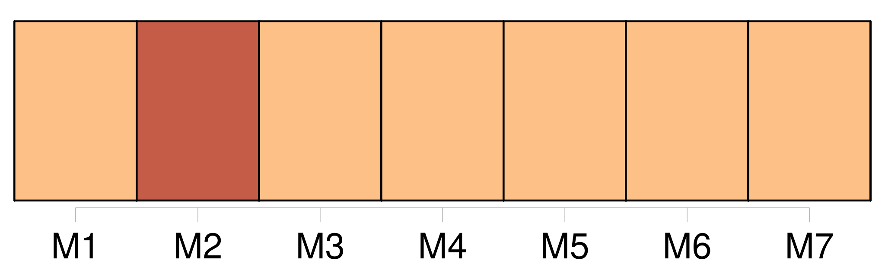

Longueur nb maillons : 18 mentions |
  |
Et voilà pourquoi peut-être les aimons [-nous] si passionnément!! [38 phrases] Ces niaiseries, dites avec le ton spirituel, avec l’ air railleur qui, de [nos] jours, caractérise une société sans croyances, entretenaient de vagues soupçons sur la maison de Lanty. [77 phrases] Quelques vieillards [nous] présentent souvent des portraits plus hideux ; mais ce qui contribuait le plus à donner l’ apparence d’ une création artificielle au spectre survenu devant [nous] , était le rouge et le blanc dont il reluisait. [105 phrases] C’ était une de ces soirées délicieuses à l’ âme, un de ces moments qui ne s’ oublient jamais, une de ces heures passées dans la paix et le désir, et dont, plus tard, le charme est toujours un sujet de regret, même quand [nous] nous trouvons plus heureux. [78 phrases] L’ artiste eut froid ; puis, il sentit un foyer qui pétilla soudain dans les profondeurs de son être intime, de ce que [nous] nommons le cœur, faute de mot!! Il n’ applaudit pas, il ne dit rien, il éprouvait un mouvement de folie, espèce de frénésie qui ne [nous] agite qu’ à cet âge où le désir a je ne sais quoi de terrible et d’ infernal. [17 phrases] De retour au logis, il tomba dans un de ces paroxysmes d’ activité qui [nous] révèlent la présence de principes nouveaux dans [notre] existence. [4 phrases] Sarrasine crayonna sa maîtresse dans toutes les poses : il la fit sans voile, assise, debout, couchée, ou chaste ou amoureuse, en réalisant, grâce au délire de ses crayons, toutes les idées capricieuses qui sollicitent [notre] imagination quand [nous] pensons fortement à une maîtresse. [4 phrases] Cet âge d’ or de l’ amour, pendant lequel [nous] jouissons de [notre] propre sentiment et où [nous] nous trouvons heureux presque par [nous -mêmes] , ne devait pas durer long-temps chez Sarrasine. [6 phrases] Il aimait avec tant de force et si naïvement qu’ il eut à subir les innocents scrupules dont [nous] sommes assaillis quand [nous] aimons pour la première fois. [354 phrases] Mères, des enfants [nous] assassinent ou par leur mauvaise conduite ou par leur froideur. |

|
La ressource peut être téléchargée sur la page Ortolang
Si vous avez des questions ou vous voyez des erreurs, merci d'envoyer un mail à silvia.federzoni89@gmail.com
Site développé par S. Federzoni (contact)